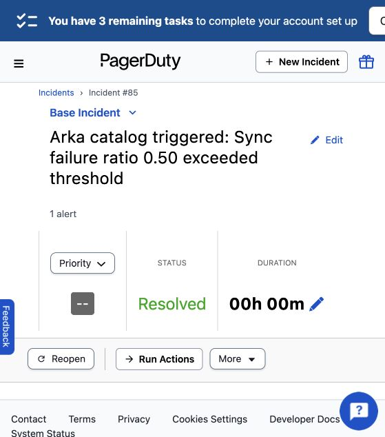
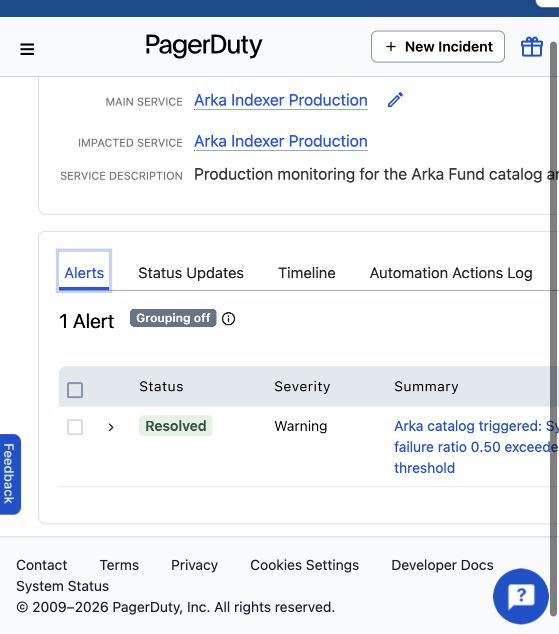

Production monitoring
Alert lifecycle
Arka Indexer Production detects unhealthy sync conditions, opens a PagerDuty incident and resolves it after the service returns to its healthy state.
PagerDuty incident #85
Controlled partial-sync failure
A 50% sync failure ratio exceeded the configured 25% threshold. PagerDuty received the alert through its Events API and recorded the subsequent resolution.


TypeScript SDK
Read Arka monitoring state
The public SDK exposes Arka monitoring status, recent indexer runs and alert history. PagerDuty remains isolated within the private operations layer.
import { CatalogClient } from "@arkafund/sdk";
const catalog = new CatalogClient();
const status = await catalog.monitoringStatus();
const runs = await catalog.monitoringRuns({ limit: 10 });
const alerts = await catalog.monitoringAlerts();- Public surface
- Arka monitoring data
- Operations surface
- PagerDuty Events API
- Credential exposure
- None